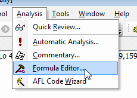
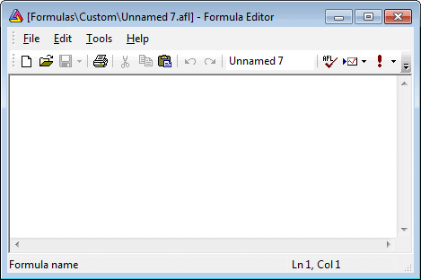
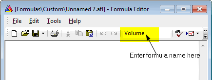
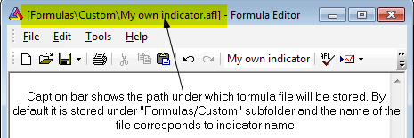
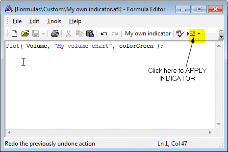
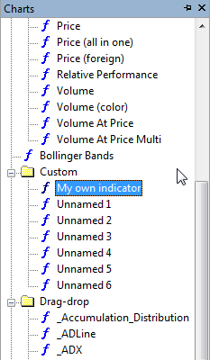
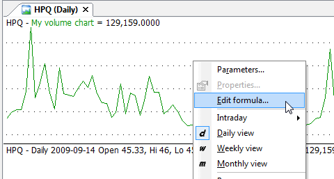
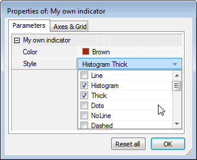
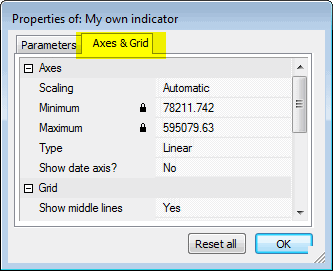

There are two ways to create your own indicators:
1) Using a drag-and-drop interface
2) By writing your own formula
The first method, using a drag-and-drop interface, is very simple and does not require writing a single line of code. To learn more about drag-and-drop indicator creation, please check Tutorial: How to use drag-and-drop charting interface
The second method involves writing an indicator formula in flexible AFL (AmiBroker Formula Language). You can find a description of this language in the AFL Reference Guide section of the user's guide. Here we will present the basic steps needed to define and display your own custom indicator. In this example, we will define an "indicator" that will show a line volume graph (opposite to the built-in bar volume graph).
Just follow these steps:




Plot( Volume, "My
volume chart", colorGreen );
Now the indicator you have just written is displayed as a chart. You can also find it stored as a formula in the Chart tree:

Now you can improve your indicator by adding Param functions so that both the color and style of the plot can be modified using the Parameters dialog. To do so, click with the RIGHT mouse button over the chart pane and select "Edit Formula" (or press Ctrl+E)

And modify the formula to:
Plot( Volume, "My
volume chart", ParamColor("Color", colorGreen ), ParamStyle("Style", 0,
maskAll ) );
Then press "Apply indicator" to apply the changes. Now click with the RIGHT mouse button over the chart pane again and select "Parameters" (or press Ctrl+R), and you will see the Parameters dialog allowing you to modify colors and styles used to plot a chart:

Also, in the "Axes & Grid" tab, you will be able to change settings for axes, grids, and other charting options referring to this particular chart:

For further information on creating your indicators, please check the Using graph styles and colors tutorial section.
For further reference on using the Formula Editor, please consult the "Environment - Formula Editor" and "AmiBroker Formula Language - AFL Tools" sections of the AmiBroker User's guide and using the AFL editor.